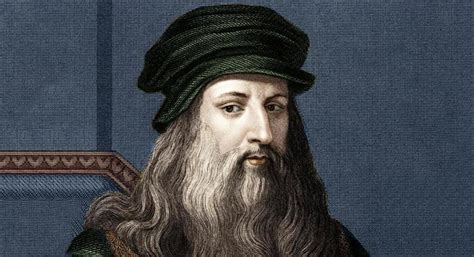
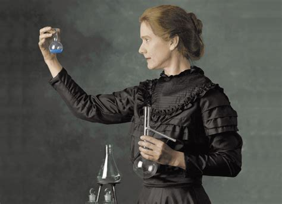
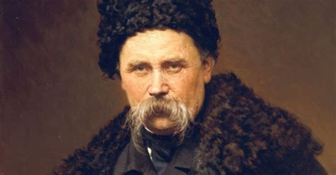

Видатні постаті

Леонардо да Вінчі
Італійський художник, вчений і винахідник епохи Відродження, автор «Мони Лізи» та «Таємної вечері».

Марія Кюрі
Перша жінка, яка отримала Нобелівську премію, досліджувала радіоактивність та відкрила елементи полоній і радій.

Тарас Шевченко
Український поет, художник і громадський діяч, автор збірки «Кобзар» — символ боротьби за свободу народу.